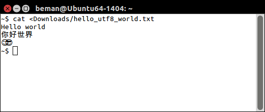
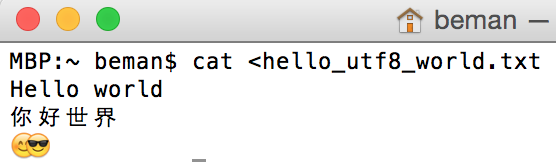
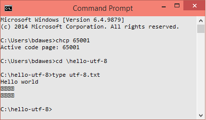
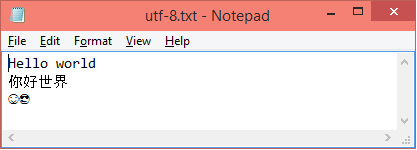

The test file contains three lines:
Hello world 你好世界 😊😎
Here is the C++03 program that generated it:
#include <iostream>
int main()
{
std::cout << "Hello world" << std::endl;
// Traditional Chinese
// U+4f60 Han Character 'you, second person pronoun'
// U+597D Han Character 'good, excellent, fine; well'
// U+4E16 Han Character 'generation; world; era'
// U+754C Han Character 'boundary, limit; domain; society; the world'
//
// Output as UTF-8:
std::cout << "\xE4\xBD\xA0" "\xE5\xA5\xBD" "\xE4\xB8\x96" "\xE7\x95\x8C" << std::endl;
// Test cases above the BMP
// U+1F60A SMILING FACE WITH SMILING EYES
// U+1F60E SMILING FACE WITH SUNGLASSES
//
// Output as UTF-8
std::cout << "\xF0\x9F\x98\x8A" "\xF0\x9F\x98\x8E" << std::endl;
}
Here's a hex dump of the file:
000000: 48 65 6C 6C 6F 20 77 6F 72 6C 64 0D 0A E4 BD A0 Hello world..... 000010: E5 A5 BD E4 B8 96 E7 95 8C 0D 0A F0 9F 98 8A F0 ................ 000020: 9F 98 8E 0D 0A 00 00 00 00 00 00 00 00 00 00 00 ................
According to Google Translate, "你好世界" is "Hello world" in traditional Chinese, so it is an appropriate UTF-8 test for the Basic Multilingual Plane (BMP).
The smiling faces, "😊😎" are chosen to test the Supplementary Multilingual Plane (SMP). See Wikipedia - Unicode Emoticons.
I haven't yet added test cases for the Supplementary Ideographic Plane (SIP).
Command line (i.e. bash) works fine:

Command line (i.e. bash) works fine:
|  |
Command prompt with the font set to Consolas fails:

Grrrr! Fails both the BMP and SMP test cases!
The fault isn't with the Consolas font in general, since Notepad works just fine using Consolas:

Last modified: 22 December 2014
© Copyright Beman Dawes 2014
All files in this repository are distributed under the Boost Software License, Version 1.0. See www.boost.org/LICENSE_1_0.txt